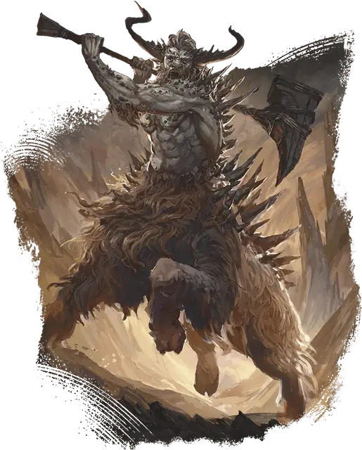

Ренделит
Rendelith
Большое Исчадие (Демон), Хаотичное Злое

Класс Защиты 20 Инициатива +7 (17)
Хиты 294 (31к10 + 124)
Скорость 50 футов
| мод | спас | ||
|---|---|---|---|
| СИЛ | 25 | +7 | +13 |
| ЛОВ | 12 | +1 | +7 |
| ТЕЛ | 19 | +4 | +10 |
| мод | спас | ||
|---|---|---|---|
| ИНТ | 20 | +5 | +5 |
| МДР | 17 | +3 | +9 |
| ХАР | 18 | +4 | +4 |
Сопротивление урону Огонь, Холод, Электричество
Иммунитеты Яд; Отравленный
Чувства пассивное Восприятие 19
Языки Бездны, Телепатия 120 фт.
Опасность 18 (20 000 опыта; БВ +6)
Особенности
Восстановление исчадия. Когда ренделит умирает за пределами Бездны, его тело рассыпается щебнем и в тот же миг заново возрождается со всеми Хитами где-то в Бездне.
Сопротивление магии. Ренделит совершает с Преимуществом спасброски от заклинаний и прочих магических эффектов.
Осадное чудовище. Ренделит наносит двойной урон объектам и постройкам.
Действия
Мультиатака. Ренделит совершает две атаки Каменным молотом и использует Сотворение заклинаний (Дребезги, версия 6-го уровня).
Каменный молот. Бросок рукопашной или дальнобойной атаки: +13, досягаемость 10 фт. или дистанция 120 фт. Попадание: 21 (4к6 + 7) Дробящего урона. Если цель — существо Большого размера или меньше, она Опрокидывается. Если цель уже Опрокинута, она получает 7 (2к6) дополнительного Дробящего урона. Промах или попадание: Молот магическим образом возвращается в руку ренделита сразу после совершения дальнобойной атаки.
Сотворение заклинаний. Ренделит сотворяет одно из следующих заклинаний, не нуждаясь в Материальных компонентах (заклинательная характеристика — Интеллект, Сл спасброска заклинаний 19):
Неограниченно: Движение почвы, Дребезги, версия 6-го уровня, Каменная стена, Создание прохода
Бонусные действия
Быстрая фортификация (Перезарядка 5–6). Ренделит использует Сотворение заклинаний (Движение почвы или Каменная стена).
Бонус мастерства +6
Среда обитания Бездна
Сокровища Оружейные
Ренделит
Демон разрушения и осад
Ренделиты — это громадные демоны, которые ведут армии на разрушение вражеских замков, твердынь и прочих укреплений. Они наслаждаются обрушением позиций обороняющихся, чтобы демонические орды могли ринуться в бой.
У ренделитов верхняя половина тела человеческая, но бычья — нижняя, а вдоль спин тянутся каменные шипы. Эти жестокие демоны — гениальные стратеги, которым доставляет удовольствие магически создавать стены и рвы, чтобы загонять вражеские армии в засады. В таких засадах часто участвуют орды арманитов — похожих, но более слабых демонов, движимых безудержной жаждой крови.
Большинство ренделитов так долго сражались в Войне крови — жестоком конфликте демонов и дьяволов, — что мыслят лишь категориями сражений. Каждая обрушенная стена приносит им мрачное удовлетворение, но неутолимая жажда следующей битвы гонит их всё дальше.